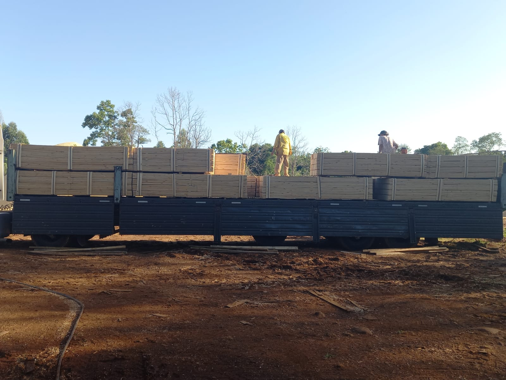

Revestimiento

Machimbre
Machimbre de pino cepillado y calibrado, con encastre parejo y atados uniformes listos para colocar en cielorrasos, paredes y galpones.
- Espesores
- 1/2" · 3/4"
- Anchos
- 4" · 6"
- Largos
- 2,00 a 4,20 m
- Presentación
- Atados flejados